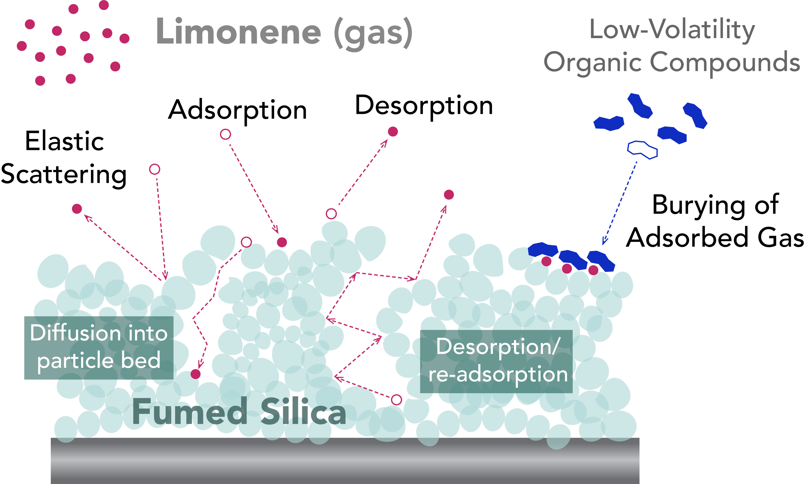
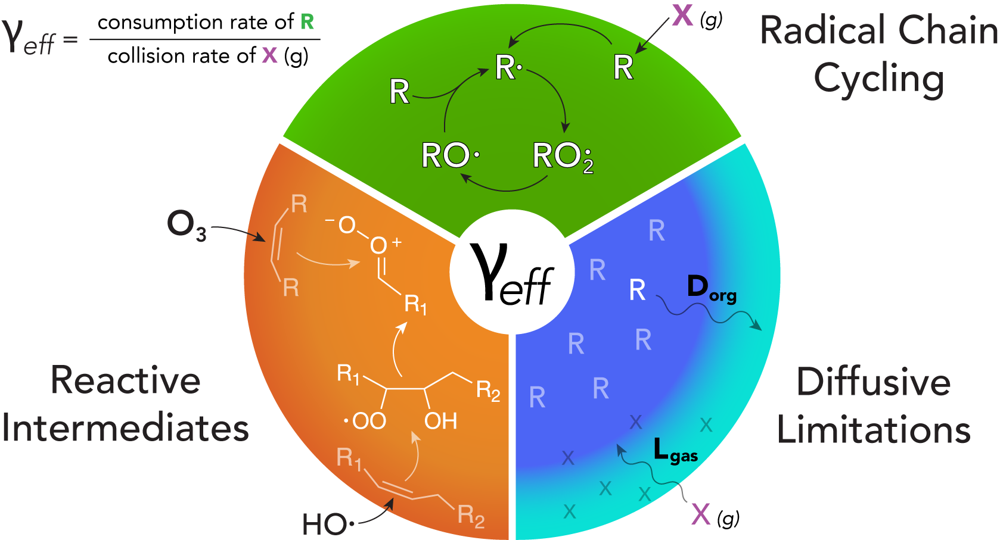
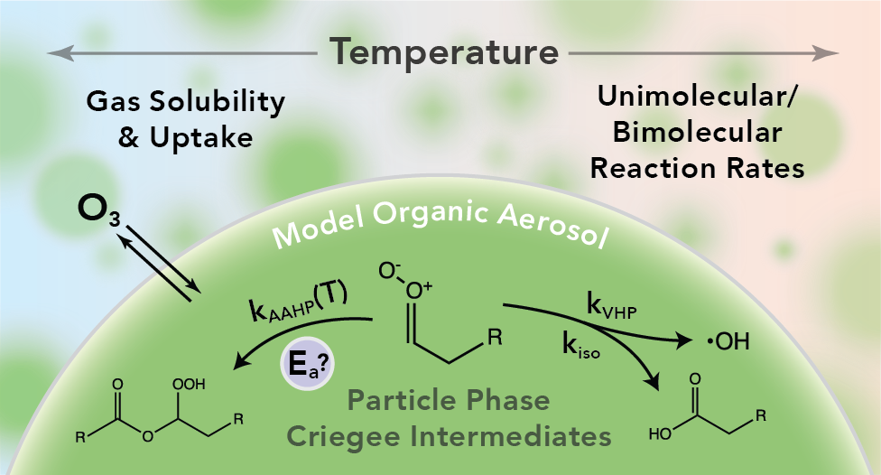
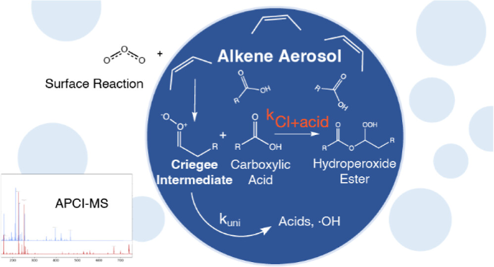
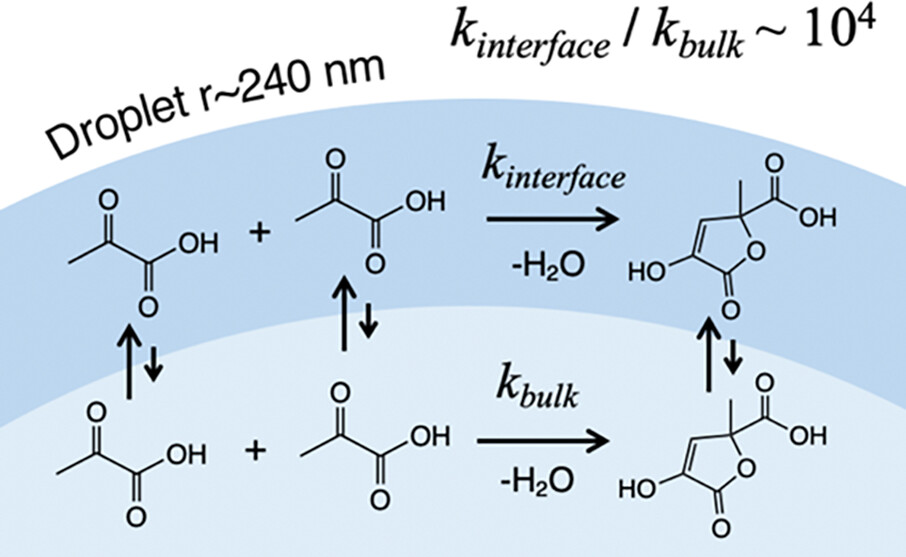
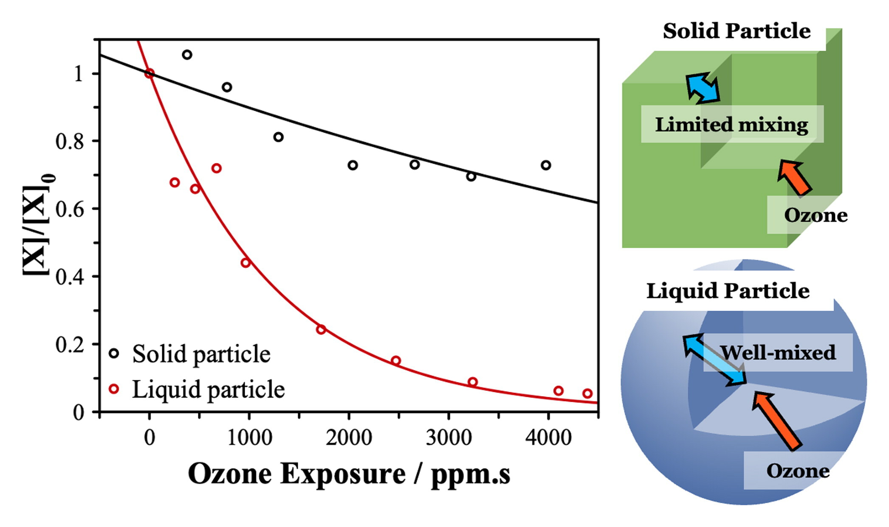

Enviromental Science: Processes & Impacts · 2025

We measured the desorption energy of limonene, a common organic molecule, from silica surfaces analogous to those found outdoors (sand) and indoors (glass). This value can be used to predict how long limonene will stick to these surfaces, which will determine its chemical reactivity and lifetime in the atmosphere.
Accounts of Chemical Research · 2025

A thematic review of work from the Wilson Research Group on how measurements of heterogeneous reaction rates (effective uptake coefficients) can report on multiple aspects of a physical system (eg. diffusion and mixing times, secondary reactions, and complex chemcal mechanisms).
Journal of Physical Chemistry A · 2025

Using a temperature-controlled flow tube, we tracked how fast ozone reacts with aerosol particles made of an alkene, both alone and mixed with a carboxylic acid that intercepts a key reactive intermediate. The alkene-only particles reacted faster as things got colder, while the acid-doped particles barely changed — a contrast that reveals a temperature-dependent tug-of-war between two competing reaction pathways inside the particle.
ACS Earth & Space Chemistry · 2023

Ozone reacting with alkenes produces short-lived, highly reactive species called Criegee intermediates, which can react with carboxylic acids to build larger molecules. We measured how fast this reaction happens inside aerosol particles, rather than in the gas phase, and found a rate constant that helps pin down how significant this pathway is for aging organic aerosol in the atmosphere.
Journal of Physical Chemistry Letters · 2024

Pyruvic acid molecules normally take days to combine into zymonic acid in a beaker of solution, but we found the same reaction finishes in minutes inside tiny aqueous droplets. Modeling showed this roughly ten-thousand-fold speedup happens because the reaction is effectively confined to the droplet's surface, where pyruvic acid concentrates and reacts far more readily than it would in the bulk liquid.
Aerosol Science and Technology · 2023

Using single-particle levitation and flow-tube experiments, we compared how ozone reacts with oleic acid and its solid-forming isomer elaidic acid across liquid, supercooled, and solid states of the same chemical. Directly comparing the same reaction across different particle phases showed that phase state has a clear effect on both how fast the reaction proceeds and what products form.